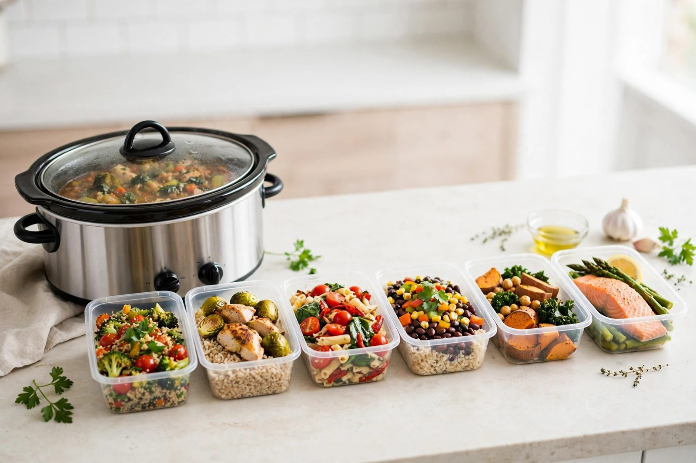
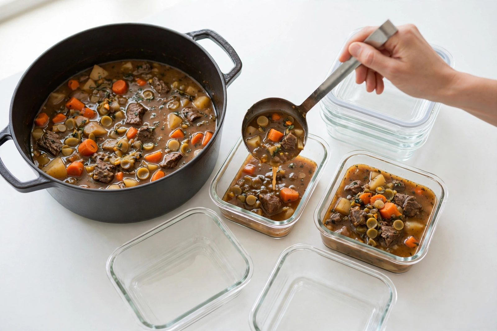

Batch cooking for the week: cook once, eat well all week

The hardest part of weeknight cooking isn't the cooking — it's the deciding, the shopping, and the starting. Batch cooking deletes all three. One deliberate session in the slow cooker, a little planning, and you're eating from your own kitchen all week instead of negotiating with the fridge every evening at six.
Why the slow cooker is a batch machine
Some cooking methods don't scale: doubling a stir-fry means two pans and twice the hovering. The slow cooker does the opposite. Going from four servings to eight costs you almost nothing extra — the same ten minutes of chopping, the same lid, the same wait. That makes it the best appliance in the kitchen for batch cooking, especially the forgiving braises, pulled meats, soups, and stews it does best.
The other advantage is hands-off time. The slow cooker just cooks — you can spend the cook time portioning the last batch, doing laundry, or leaving the house entirely.
Planning the week before you cook
A failed batch plan is almost always a planning failure, not a cooking failure. Before you buy or chop anything, decide what you're eating and when. A workable week looks like one big batch meal that covers three or four dinners, plus one smaller batch for lunches or the days the main batch runs out.
Pick two recipes at most. Three or four different batches sounds ambitious and ambitious plans die in the kitchen. Two recipes means two rounds in the cooker (or one batch and one quick stove meal), and you get genuine variety instead of a fridge full of versions of the same thing.
Build the plan around meals that overlap on groceries. If the batch is pulled pork, the second recipe could be pork-tomatillo soup using the same pork and onion. Shared ingredients mean a shorter shopping list and less waste — half an onion left over from two recipes is how leftovers go to die.
The Sunday session, step by step
Here is the shape of a typical batch session, assuming a morning start:
- Prep everything first. Chop all the vegetables, measure the spices, open the cans. Batch prep is faster than prepping twice, and it catches missing ingredients before the cooker is hot.
- Start the long cook first. The recipe that wants eight hours goes in the cooker first thing in the morning. Tough cuts like chuck roast and pork shoulder are ideal — they need the time and they reward it.
- Cook batch two while batch one rests. When the first batch finishes, portion it, then start the second cook. Soups and chili go well second, since they cook in a few hours.
- Cool and portion everything. This is the least fun step and the most important one. Divide food into single-meal containers while you're already in the kitchen, and label them. Unlabeled containers are how food gets thrown away a week later because nobody knows what it is or when it was made.

Portioning and storing like you mean it
Portion into the containers you'll actually reheat from. If lunches get reheated at work, pack them in lunch-sized containers now, not in one big tub you'll resent dividing at 7am. For family dinners, divide into the number of portions you'll serve in one sitting.
Spread food out to cool rather than leaving it piled in the hot cooker insert. Wide, shallow containers cool faster than one deep pot. Let food cool at room temperature for a reasonable time, then refrigerate promptly — don't leave a batch sitting out all afternoon while you get distracted.
Most cooked meats, soups, and stews hold well in the fridge for three to four days. Anything beyond that goes in the freezer. When you freeze, portion first: flat bags of soup stack beautifully and thaw fast, and single servings beat monoliths every time. Press excess air out of freezer bags, seal, and freeze flat — they'll slot together like files.
Meals that batch best (and one that doesn't)
Not everything survives a week in the fridge with dignity. The best batch candidates actually improve with a day or two of rest: chili, pulled pork, pot roast, chicken cacciatore, beef stew, lentil soup. Flavors meld, sauces thicken, and day-two servings often beat day one.
Handle delicate things separately. Pasta goes mushy sitting in sauce all week, so batch the sauce and cook pasta fresh at serving time. Same with rice: batch the curry or stew, cook a fresh pot of rice in twenty minutes. A small daily task plus a reheated batch is still a nearly free dinner.
Keeping it interesting
Eating the same container four days straight wears people down, even if the food is good. The fix is variety at serving, not variety in cooking. Pulled pork becomes tacos one night, sandwiches the next, and a bowl topping the third — same batch, different meal. Chili goes over a baked potato, into quesadillas, or on nachos. A couple of toppings (shredded cheese, sour cream, fresh herbs, hot sauce) rotate through the week and keep each night feeling different.
Plan one "free" night. A week where every dinner is pre-decided feels like a chore; one night of takeout keeps the system from feeling like a sentence.
A note on food safety
Batch cooking means food spends more time moving between temperatures, so be deliberate about it. Cool cooked food reasonably quickly, refrigerate promptly, and reheat leftovers thoroughly until they're steaming throughout — don't just warm them. If something smells off or you can't remember when you made it, throw it out. The money saved by batch cooking evaporates fast if food spoils.
Cook once, portion well, label everything, and reheat with conviction. That's batch cooking: not glamorous, but the closest thing to a weeknight dinner superpower that exists.